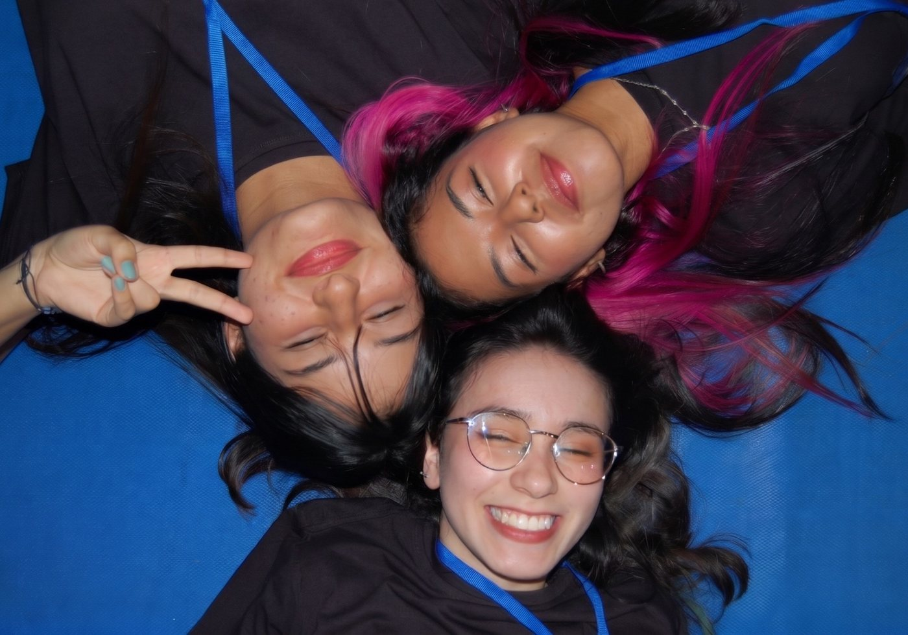

Aprendes
Ves cómo se hace un ejercicio: un video, una rutina, una explicación.
Estela te mira por la cámara mientras entrenas y te dice en voz alta, en español, cómo mejorar tu movimiento en el momento en que lo haces. Todo pasa en tu equipo: tu video nunca sale de ahí.
Ilustración animada del flujo. Las frases son las que usa la aplicación.
Una sesión real de 5 minutos: Estela observa, decide y corrige en voz alta, todo en el equipo.
Un ejercicio se entiende primero y se afina después, repetición a repetición. En ese camino ayuda tener a alguien que mire contigo.
Ves cómo se hace un ejercicio: un video, una rutina, una explicación.
En pleno movimiento cuesta notar cómo se ve desde fuera: si el brazo llega arriba, si la cadera se mantiene.
Lo que se repite se fija. Por eso conviene ajustar durante la serie, no al terminar.
Te observa por la cámara, compara tu movimiento con una referencia y te dice en voz alta qué ajustar, mientras lo haces.
Todo en tu computadorCada uno se hace de frente o de perfil, según desde dónde se ven mejor sus errores más comunes.
Si hay varios errores, Estela elige el más importante. Escuchar tres cosas mientras saltas no ayuda a nadie.
Un error tiene que repetirse antes de decirse, y después de hablar deja espacio. El silencio también es una decisión.
Cuando encadenas buenas repeticiones, te lo dice. Corregir no es lo único que motiva.
Qué corregir lo deciden reglas revisadas con una especialista. La inteligencia artificial nunca inventa lo que hiciste mal.
Todo ocurre dentro de tu computador, en una fracción de segundo. Unas reglas claras deciden qué corregir; la voz solo lo pone en palabras.
Lo que Estela sabe de cada ejercicio, cómo se hace, qué errores vigilar y qué frases decir, está guardado aparte. Por eso pudimos cambiar un ejercicio por otro sin tocar el corazón del sistema.
Una corrección que llega tarde ya no sirve, y una que se equivoca confunde. Esto es lo que medimos en la versión final.
Tiempos medidos en el equipo final del proyecto con videos de los cuatro ejercicios. Facilidad de uso: cuestionario SUS con cinco personas, noviembre de 2026. El siguiente paso es medir, con sesiones anotadas repetición por repetición, qué tan seguido acierta cada corrección.
Además de corregirte, recuerda tu progreso y, en el equipo completo, te escucha.
«Equipo completo»: un computador potente, como el Mac Studio del proyecto. En un portátil funciona la versión básica: correcciones por voz, guía animada y perfiles.
Somos estudiantes de Ingeniería de Sistemas de la Universidad del Norte. Nos une la curiosidad por la tecnología, las ganas de aprender y el deseo de crear algo que pueda generar un impacto positivo en las personas. Queríamos un reto que nos inspirara a innovar y que nos obligara a aprender cosas que nunca habíamos tocado.
Así nació ESTELA, una idea que acerca la tecnología al bienestar y acompaña a las personas mientras aprenden a moverse mejor.
Cada proyecto deja una huella, y ESTELA es la nuestra: todo lo que soñamos, aprendimos y construimos juntas.
Tres historias, una idea y una estela que apenas comienza.

No es un modelo de lenguaje con una cámara: es una entrenadora que mide, decide y sabe cuándo callar.
Vuelve a ver la demo